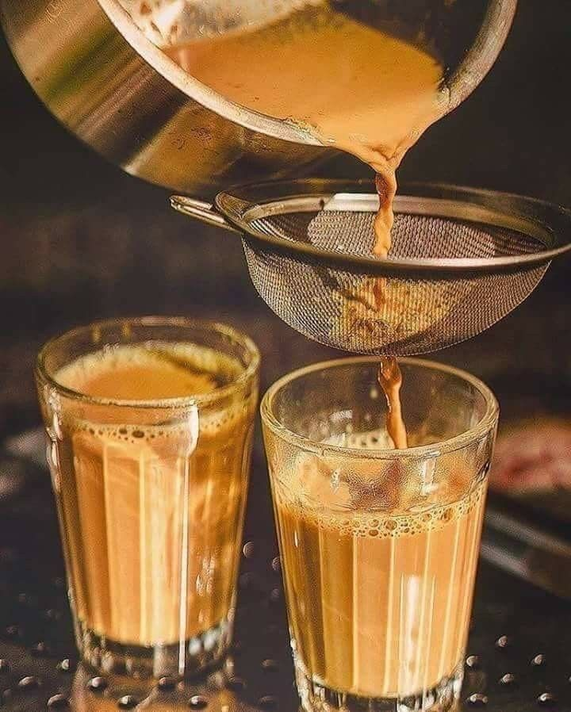

Our Cultural Journey
Rooted deep within community traditions, served fresh daily in Nairobi.

Preserving Timeless Recipes
Kac Kac Café was born out of a profound vision to share rich, authentic Somali culinary customs. Our central specialty features distinct dough preparations along with cardamon, cinnamon, and ginger-infused hot beverages designed to spark immediate warmth and relaxation.
Every single pastry item is handled with precision by seasoned chefs dedicated to maintaining exact preparation methods passed down across generations.